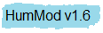
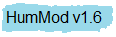

Title : Integrative Biomedicine (v1.6.1) Date / Time : 1/26/2012 1:57 PM
Files : 3821 Tags : 350092
Structures : 856 Variables : 5217 Integrals : 244 Implicits : 16 Curves : 373 Blocks : 1466
Panels : 564

 
